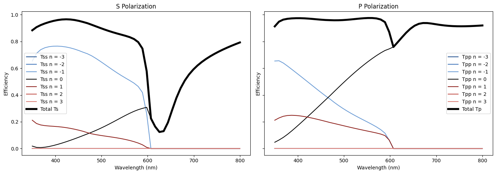

Diffraction Grating (RCWA)#
This example simulates a simple diffraction grating using RCWA.
In Part 1, we set up the structures. We define a 1D trapezoidal blazed grating (commonly used in AR/VR applications). The grating is parameterized by its periodicity, fill factor, top width, and depth. In Part 2, we use RCWA to calculate the complex transmission/reflection of the grating. In Part 3, we plot the results.
Prerequisites: Valid FDTD license is required.
Perform required imports
[ ]:
1import matplotlib.pyplot as plt # Only required for plotting
2import numpy as np
3
4import ansys.lumerical.core as lumapi
Part 1: Set up structures and simulation objects.#
[ ]:
5# Define parameters
6
7# Set filename for saving and loading
8filename = "1D_diffraction_grating.fsp"
9
10# Units
11um = 1e-6
12nm = 1e-9
13
14# Grating parameters
15period_x = 0.600 * um # Period (pitch) of the grating in x direction, 1D grating
16fill_factor = 0.5
17depth = 0.40 * um
18top_factor = 0.3 # The top width of the grating tooth as a factor of the bottom width, for a trapezoidal profile. Set to 0 for rectangular profile.
19num_teeth = 5 # Number of grating teeth to create; only one is needed for periodic boundary conditions
20
21# Base/ substrate parameters
22base_x = 1.5 * period_x * num_teeth # The x span of the base/substrate
23base_y = 3 * period_x
24base_z = 5 * um # Typically we inject light into the substrate/base and assume it is infinitely thick compared to the teeth
25
26# Set materials
27n_grat = 1.565 # Refractive index of the grating material, simple non-dispersive material
28n_base = 1.565 # Refractive index of the base material, simple non-dispersive material
29
30# Define wavelengths of interest
31wl_min = 350 * nm
32wl_max = 800 * nm
33
34# Define angles of interest
35theta_min = 0
36theta_max = 90
37phi_min = 0
38phi_max = 360
39
40# Simulation parameters
41sim_x_span = period_x # The x span of the simulation region, set to one period for periodic boundary conditions
42sim_y_span = period_x # The y span of the simulation region; here the grating is uniform in y, so this can be made thinner if desired
43z_buffer = wl_min # A buffer region above and below the structure to ensure the simulation region is large enough to avoid boundary effects
44sim_z_max = depth + z_buffer # Good practice to make sure the simulation region is at least one wavelength larger than the structure
45sim_z_min = -z_buffer
[ ]:
46# Initialize session and build simulation objects. Set hide = True to hide the Lumerical GUI.
47# This block will build a 1D trapezoidal blazed grating structure on a substrate.
48# The simulation file will be saved to the current working directory with the name specified in the "filename" variable above.
49
50
51def build_1d_grating(fdtd, filename, period_x, fill_factor, depth, top_factor, num_teeth, base_x, base_y, base_z, n_grat, n_base):
52 """
53 Build a 1D trapezoidal blazed grating structure on a substrate.
54
55 Parameters
56 ----------
57 fdtd: The name of a Lumerical session object
58 filename: File name to save to
59 period_x: Period (pitch) of the grating in x direction
60 fill_factor: The width of the bottom of the grating tooth as a factor of the period
61 depth: Depth of the grating
62 top_factor: The top width of the grating tooth as a factor of the bottom width
63 num_teeth: Number of grating teeth to create (note only 1 is needed for periodic simulation)
64 base_x, base_y, base_z: Dimensions of the base/substrate, should extend through simulation region
65 n_grat: Refractive index of the grating material
66 n_base: Refractive index of the base material
67 """
68 fdtd.addstructuregroup({"name": "1D_grating"})
69 # First add the base/substrate
70 fdtd.addrect({"name": "base", "x": 0, "y": 0, "x span": base_x, "y span": base_y, "z min": -base_z, "z max": 0, "index": n_base})
71
72 # Now add the grating teeth
73 for n in range(num_teeth):
74 # Define the vertices of the polygon
75 x1, y1 = 0, 0
76 x2, y2 = period_x * fill_factor, 0
77 x3, y3 = period_x * top_factor * fill_factor, depth
78 x4, y4 = 0, depth
79 vtx = np.array([[x1, y1], [x2, y2], [x3, y3], [x4, y4]])
80 # Set the properties of the grating. We add a rotation to orient from the xy plane to the xz plane
81 grating_props = {
82 "name": f"tooth_{n}",
83 "x": n * period_x - 0.5 * num_teeth * period_x,
84 "y": 0,
85 "index": n_grat,
86 "first axis": "x",
87 "rotation 1": 90,
88 }
89 fdtd.addpoly(grating_props)
90 fdtd.setnamed(f"tooth_{n}", "vertices", vtx) # Set the vertices of the polygon
91 fdtd.setnamed(f"tooth_{n}", "z span", base_y) # This is the thickness of the grating tooth in the y direction since there is a rotation
92 fdtd.addtogroup("1D_grating") # Adds the recently created polygon to the structure group
93 fdtd.save(filename)
94
95
96def build_rcwa(fdtd, filename, x_min, x_max, y_min, y_max, z_min, z_max):
97 """
98 Set up the RCWA simulation object geometry.
99
100 Note the RCWA interfaces are set according to the minimum and maximum z positions of the grating and base objects.
101 Therefore, you must build the grating first and add the RCWA simulation object after the grating is built.
102
103 Parameters
104 ----------
105 fdtd: The name of a Lumerical session object
106 filename: File name to save to
107 x_min, x_max, y_min, y_max, z_min, z_max: Boundaries of the simulation region
108 """
109 # Set up RCWA simulation object
110 fdtd.addrcwa(
111 {
112 "x min": x_min,
113 "x max": x_max,
114 "y min": y_min,
115 "y max": y_max,
116 "z min": z_min,
117 "z max": z_max,
118 "simulation region": "3D",
119 "propagation direction": "forward",
120 }
121 )
122
123 # Set the RCWA interface positions. The interface positions are set from the minimum and maximum z positions of the grating object.
124 # For documentation, see https://optics.ansys.com/hc/en-us/articles/12959229278611-RCWA-Solver-Simulation-Object
125 fdtd.setnamed("RCWA", "interface position", "reference")
126 # Here, set the number of interfaces in each layer; here we set 10 interfaces for the slanted grating
127 # Only 1 interface is needed for the base since it is uniform in z
128 interfaces = [["::model::1D_grating", "max", 10], ["::model::base", "max", 1]]
129 fdtd.setnamed("RCWA", "interface reference positions", interfaces)
130
131 fdtd.save(filename)
132
133
134# Build the grating and RCWA simulation objects
135with lumapi.FDTD(hide=False) as fdtd:
136 build_1d_grating(fdtd, filename, period_x, fill_factor, depth, top_factor, num_teeth, base_x, base_y, base_z, n_grat, n_base)
137 print("Grating geometry saved to file: " + filename)
138 x_shift = -0.25 * period_x # Shift the RCWA simulation region by a quarter period to avoid the interface coinciding with the grating tooth edge
139 build_rcwa(fdtd, filename, -0.5 * period_x + x_shift, 0.5 * period_x + x_shift, -0.5 * period_x, 0.5 * period_x, -2 * depth, 3 * depth)
140 print("RCWA simulation geometry saved to file: " + filename)
Part 2: RCWA Simulation.#
[ ]:
141# Open the previously saved file, configure wavelength/angle excitation settings, and run the RCWA simulation.
142# The grating_characterization result is returned. For documentation, see https://optics.ansys.com/hc/en-us/articles/12959229278611-RCWA-Solver-Simulation-Object
143# Grating_characterization returns the complex S-parameters for each grating order split into S and P polarizations.
144
145# Set the number of wavelengths and angles to simulate
146# Setting to 1 will use the minimum value set above
147num_wavelengths = 20
148num_theta = 4
149num_phi = 3
150
151
152def run_rcwa_simulation(fdtd, filename, wl_min, wl_max, num_wavelengths, theta_min=0, theta_max=90, num_theta=1, phi_min=0, phi_max=180, num_phi=1):
153 """
154 Run the RCWA simulation and retrieves the grating characterization results.
155
156 Parameters
157 ----------
158 fdtd: The name of a Lumerical session object
159 filename: File name to load
160 wl_min: Minimum wavelength
161 wl_max: Maximum wavelength
162 num_wavelengths: Number of wavelength points
163 theta_min: Minimum incident angle (theta)
164 theta_max: Maximum incident angle (theta)
165 num_theta: Number of theta points
166 phi_min: Minimum azimuthal angle (phi)
167 phi_max: Maximum azimuthal angle (phi)
168 num_phi: Number of phi points
169 """
170 # First, return to layout
171 fdtd.switchtolayout()
172
173 # Set RCWA incident illumination properties
174 fdtd.setnamed("RCWA", "propagation direction", "forward") # Propagate forward or backward along z axis
175
176 fdtd.setnamed("RCWA", "use wavelength spacing", True)
177 fdtd.setnamed("RCWA", "minimum wavelength", wl_min)
178 fdtd.setnamed("RCWA", "maximum wavelength", wl_max)
179 fdtd.setnamed("RCWA", "frequency points", num_wavelengths)
180 fdtd.setnamed("RCWA", "incident angle", "range")
181 fdtd.setnamed("RCWA", "minimum theta", theta_min)
182 fdtd.setnamed("RCWA", "maximum theta", theta_max)
183 fdtd.setnamed("RCWA", "theta points", num_theta)
184 fdtd.setnamed("RCWA", "minimum phi", phi_min)
185 fdtd.setnamed("RCWA", "maximum phi", phi_max)
186 fdtd.setnamed("RCWA", "phi points", num_phi)
187
188 # Set result properties
189 fdtd.setnamed("RCWA", "report grating characterization", True)
190 fdtd.setnamed("RCWA", "return theta and phi as separate parameters when possible", True)
191
192 # Save and run
193 fdtd.save(filename)
194 fdtd.run() # Run the simulation
195 fdtd.save(filename) # Save the file after running to save the results
196
197 # Retrieve results
198 gc = fdtd.getresult("RCWA", "grating_characterization") # full complex S-parameters
199 total_energy = fdtd.getresult("RCWA", "total_energy") # total T/R for each polarization
200
201 return gc, total_energy
202
203
204# Now use the function to run the RCWA simulation and retrieve the results
205with lumapi.FDTD(filename, hide=False) as fdtd:
206 gc, total_energy = run_rcwa_simulation(
207 fdtd, filename, wl_min, wl_max, num_wavelengths, theta_min, theta_max, num_theta, phi_min, phi_max, num_phi
208 )
209 print("RCWA simulation completed and results retrieved.")
210
211# Print the sweep parameters
212print("RCWA sweep parameters:")
213print("lambda:", np.unique(gc["lambda"]) * 1e9, "nm") # Convert to nm for display
214print("theta:", np.unique(gc["theta"]), "deg")
215print("phi:", np.unique(gc["phi"]), "deg")
Part 3: Plot results and export to LSWM.#
[ ]:
216# Now plot useful results.
217# The following function helps to extract useful results from the grating_characterization object for plotting.
218
219
220def extract_values_gc(gc, order_n=0, order_m=0, angle_theta=0, angle_phi=0):
221 """Extract T, R results versus wavelength for the specified order and angle for both S and P polarizations."""
222 Tss = gc["Tss"] # Result returned vs. wavelength, theta, phi, orders n and m
223 Tpp = gc["Tpp"]
224 Rss = gc["Rss"]
225 Rpp = gc["Rpp"]
226
227 # Get m and n indices of the specified order
228 m = np.where(gc["m"] == order_m)[0]
229 n = np.where(gc["n"] == order_n)[0]
230 # Get theta and phi indices at normal incidence
231 theta_phi = np.where((gc["theta"] == angle_theta) & (gc["phi"] == angle_phi))[0]
232 wavelengths = gc["lambda"] # Wavelength values corresponding to the results
233
234 # Calculate transmission and reflection for both polarizations
235 plot_Tss = np.abs(Tss[:, theta_phi, n, m]) ** 2 # wavelength, theta, phi, order n, order m
236 plot_Rss = np.abs(Rss[:, theta_phi, n, m]) ** 2
237 plot_Tpp = np.abs(Tpp[:, theta_phi, n, m]) ** 2
238 plot_Rpp = np.abs(Rpp[:, theta_phi, n, m]) ** 2
239
240 return plot_Tss, plot_Rss, plot_Tpp, plot_Rpp, wavelengths
241
242
243def extract_values_total_energy(total_energy, angle_theta=0, angle_phi=0):
244 """Extract T, R results versus wavelength for the specified angle for both S and P polarizations."""
245 Ts = total_energy["Ts"] # Result returned vs. wavelength, theta, phi
246 Tp = total_energy["Tp"]
247 Rs = total_energy["Rs"]
248 Rp = total_energy["Rp"]
249
250 # Get theta and phi indices at normal incidence
251 theta = np.where(total_energy["theta"] == angle_theta)[0]
252 phi = np.where(total_energy["phi"] == angle_phi)[0]
253 wavelengths = total_energy["lambda"] # Wavelength values corresponding to the results
254
255 # Calculate transmission and reflection for both polarizations
256 plot_Ts = np.abs(Ts[:, theta, phi]) # wavelength, theta, phi
257 plot_Rs = np.abs(Rs[:, theta, phi])
258 plot_Tp = np.abs(Tp[:, theta, phi])
259 plot_Rp = np.abs(Rp[:, theta, phi])
260
261 return plot_Ts, plot_Rs, plot_Tp, plot_Rp, wavelengths
[ ]:
262# Plot RCWA results
263
264# Plot efficiencies for specific orders
265order_ns = range(-3, 4) # Specify the range of diffraction orders to plot, e.g., from -3 to 3
266
267# Set up plotting
268fig, axes = plt.subplots(1, 2, figsize=(14, 5), sharex=True, sharey=True)
269
270
271def order_style(order_n):
272 """Help plot diffraction orders with different colors."""
273 if order_n == 0:
274 return "black", "-"
275 color_map = {
276 -3: "#1f4e8c",
277 -2: "#3d73b9",
278 -1: "#6a9bd5",
279 1: "#8c1d18",
280 2: "#bf4a43",
281 3: "#d97a73",
282 }
283 return color_map[order_n], "-"
284
285
286for n in order_ns:
287 Tss, Rss, Tpp, Rpp, wavelengths = extract_values_gc(gc, order_n=n)
288 color, style = order_style(n)
289 axes[0].plot(wavelengths * 1e9, Tss, label=f"Tss n = {n}", color=color, linestyle=style)
290 # axes[0].plot(wavelengths*1e9, Rss, label=f"Rss n = {n}", color=color, linestyle="--")
291 axes[1].plot(wavelengths * 1e9, Tpp, label=f"Tpp n = {n}", color=color, linestyle=style)
292 # axes[1].plot(wavelengths*1e9, Rpp, label=f"Rpp n = {n}", color=color, linestyle="--")
293
294# Retrieve overall T/R results at normal incidence
295total_Ts, total_Rs, total_Tp, total_Rp, wavelengths = extract_values_total_energy(total_energy) # Total transmission for each polarization
296axes[0].plot(wavelengths * 1e9, total_Ts, label="Total Ts", color="black", linewidth=4)
297# axes[0].plot(wavelengths*1e9, total_Rs, label="Total Rs", color="black", linestyle="--", linewidth=4)
298axes[1].plot(wavelengths * 1e9, total_Tp, label="Total Tp", color="black", linewidth=4)
299# axes[1].plot(wavelengths*1e9, total_Rp, label="Total Rp", color="black", linestyle="--", linewidth=4)
300
301for ax in axes:
302 ax.set_xlabel("Wavelength (nm)")
303 ax.set_ylabel("Efficiency")
304 ax.legend()
305
306axes[0].set_title("S Polarization")
307axes[1].set_title("P Polarization")
308
309fig.tight_layout()
310plt.show(block=False)
